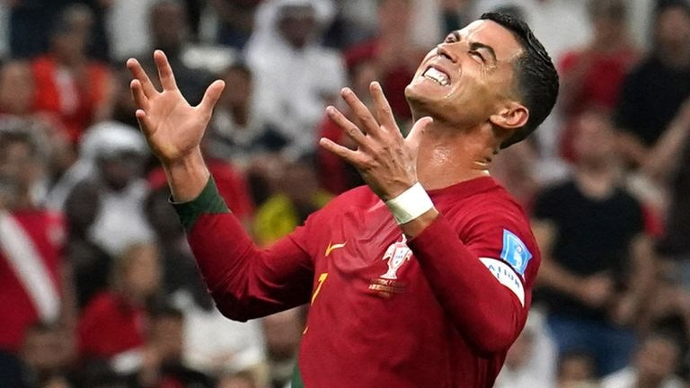

Benched at the 2022 World Cup — Ten-Year Feud with Santos
Two matches on the bench: At the 2022 Qatar World Cup, Portugal manager Fernando Santos made a stunning call — for the round-of-16 tie with Switzerland he dropped Ronaldo from the starting XI, having already substituted him early in the final group match (with visible displeasure). Two straight games benched was, for a self-proclaimed 'best in history', tantamount to public humiliation.
Gonçalo's hat-trick slap: Replacing Ronaldo, 21-year-old Gonçalo Ramos proceeded to score a hat-trick as Portugal thrashed Switzerland 6-1. It was the tournament's first hat-trick — and the loudest possible retort: without Ronaldo, Portugal were more fluid and more alive.
Santos's honesty: After the match Santos called the decision a 'strategic and human-resources comprehensive consideration', and did not spare Ronaldo's status. The consensus read: the coaching staff could no longer tolerate Ronaldo's strolling and refusal to track back; better to sacrifice the halo for the collective.
The lonely walk off: After full time Ronaldo walked alone toward the tunnel while teammates celebrated on the pitch, striding off without looking back. Cameras caught it all, and that solitary silhouette quickly went viral, the most visceral footnote to his fractured relationship with the national team.
Sister's 'last dance': His sister Katia posted on social media hinting this could be Ronaldo's 'last dance' for Portugal, further exposing the internal friction to the public. The family-style statement piled pressure onto an already-tense dressing room and revealed the Ronaldo camp's intense desire to control the narrative.
A clean break with Santos: Soon after the tournament Santos left his post and Ronaldo never spoke to him again. The master-pupil relationship ended in the most graceless way — one deemed 'used and discarded', the other 'trading on seniority'. So much for the national-team totem, beaten by age and tactical renewal.